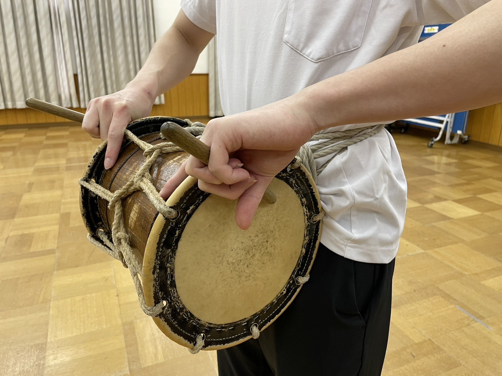
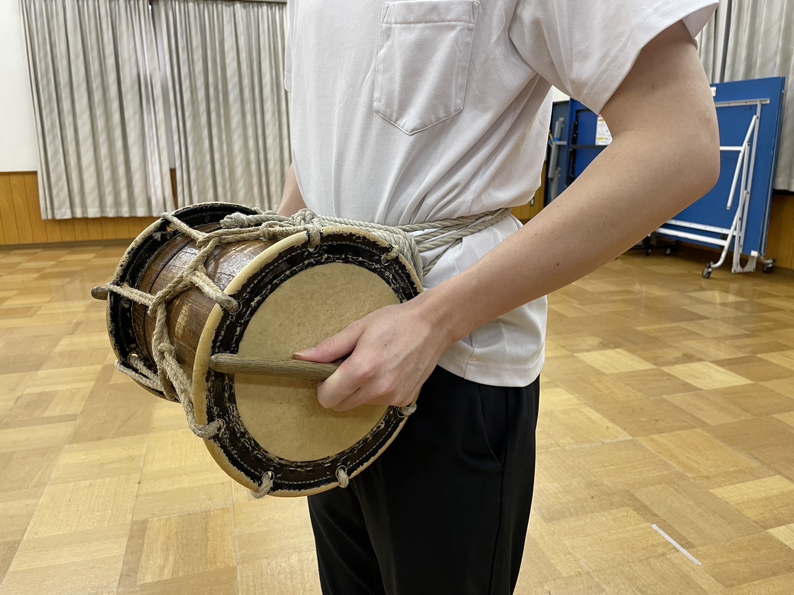
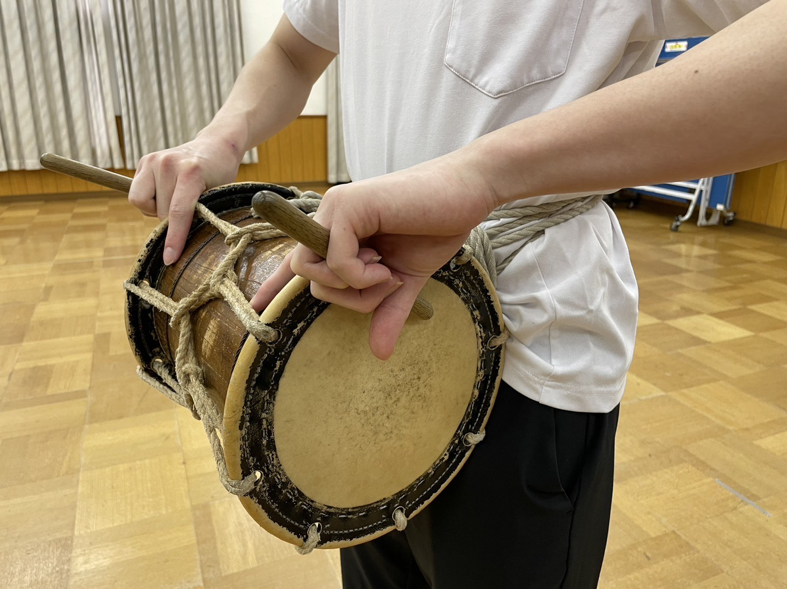
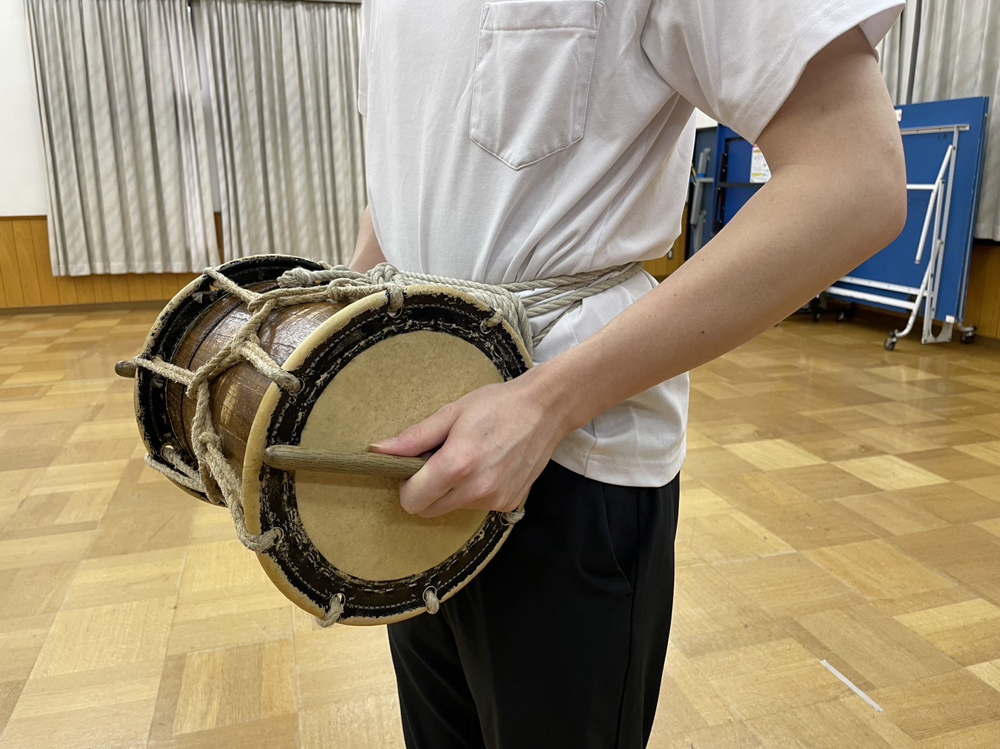

良い例
正しいバチの持ち方

中指と薬指でバチをつかみ、人差し指でたいこをささえている。
悪い例
悪いバチの持ち方
たいこをたたく時の持ち方と同じになっている。
この画面では、前ページの出羽通し動画内で右上に表示された、番号5について解説します。良い例、悪い例の動画を見てちがいを理解しましょう。
良い例
正しいバチの持ち方

中指と薬指でバチをつかみ、人差し指でたいこをささえている。
悪い例
悪いバチの持ち方
たいこをたたく時の持ち方と同じになっている。
注目ポイント
首をふっている時のバチの持ち方に注目しましょう。悪い例の写真のような持ち方で首をふっている人が多いです。